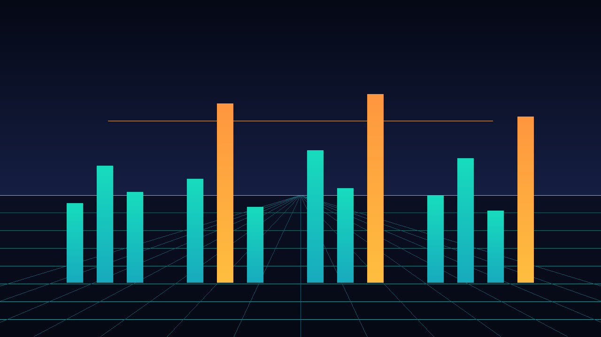

s01 Gate Pulse
Core bass
Harmonic reference, not core
Synthwave Basslines
Stills · Arrangement · Files

Eight studies
Space plays the bass. J and K change study.
bass pulse octave leap rest of an eighth or longer
Reading the MIDI.
Separate MIDI file. These notes are not drawn on the bass staff and are not merged into the bass part.
Bass is monophonic and uses MIDI notes 28 to 60 only. C4 is 60. The harmonic reference is not core. It uses MIDI 60 to 84, at most three notes at once, in its own files.
Core bass
Harmonic reference, not core
Core bass
Harmonic reference, not core
Core bass
Harmonic reference, not core
Core bass
Harmonic reference, not core
Core bass
Harmonic reference, not core
Core bass
Harmonic reference, not core
Core bass
Harmonic reference, not core
Core bass
Harmonic reference, not core
Use either the combined arrangement or the separate parts. Do not stack the part files on top of the combined file.
| Part | Role | Var | Count | BPM | Bars | Notes |
|---|---|---|---|---|---|---|
| s01.bass.a | bass | a | core | 100 | 8 | 45 |
| s01.bass.b | bass | b | core | 100 | 8 | 32 |
| s01.harmonic.a | harmonic-reference | a | harmonic reference | 100 | 8 | 6 |
| s01.harmonic.b | harmonic-reference | b | harmonic reference | 100 | 8 | 4 |
| s02.bass.a | bass | a | core | 110 | 16 | 62 |
| s02.bass.b | bass | b | core | 110 | 16 | 48 |
| s02.harmonic.a | harmonic-reference | a | harmonic reference | 110 | 16 | 6 |
| s02.harmonic.b | harmonic-reference | b | harmonic reference | 110 | 16 | 4 |
| s03.bass.a | bass | a | core | 90 | 8 | 8 |
| s03.bass.b | bass | b | core | 90 | 8 | 32 |
| s03.harmonic.a | harmonic-reference | a | harmonic reference | 90 | 8 | 6 |
| s03.harmonic.b | harmonic-reference | b | harmonic reference | 90 | 8 | 4 |
| s04.bass.a | bass | a | core | 118 | 16 | 92 |
| s04.bass.b | bass | b | core | 118 | 16 | 48 |
| s04.harmonic.a | harmonic-reference | a | harmonic reference | 118 | 16 | 6 |
| s04.harmonic.b | harmonic-reference | b | harmonic reference | 118 | 16 | 4 |
| s05.bass.a | bass | a | core | 85 | 8 | 14 |
| s05.bass.b | bass | b | core | 85 | 8 | 16 |
| s05.harmonic.a | harmonic-reference | a | harmonic reference | 85 | 8 | 6 |
| s05.harmonic.b | harmonic-reference | b | harmonic reference | 85 | 8 | 4 |
| s06.bass.a | bass | a | core | 120 | 16 | 112 |
| s06.bass.b | bass | b | core | 120 | 16 | 48 |
| s06.harmonic.a | harmonic-reference | a | harmonic reference | 120 | 16 | 6 |
| s06.harmonic.b | harmonic-reference | b | harmonic reference | 120 | 16 | 4 |
| s07.bass.a | bass | a | core | 96 | 8 | 21 |
| s07.bass.b | bass | b | core | 96 | 8 | 32 |
| s07.harmonic.a | harmonic-reference | a | harmonic reference | 96 | 8 | 6 |
| s07.harmonic.b | harmonic-reference | b | harmonic reference | 96 | 8 | 4 |
| s08.bass.a | bass | a | core | 108 | 16 | 42 |
| s08.bass.b | bass | b | core | 108 | 16 | 96 |
| s08.harmonic.a | harmonic-reference | a | harmonic reference | 108 | 16 | 6 |
| s08.harmonic.b | harmonic-reference | b | harmonic reference | 108 | 16 | 4 |
Recorded reading
This MP3 is 19.20 seconds. preview, not a master. It includes bass A and harmonic reference A from study 01. The film is 19.20 seconds and shows preview, not master.
No program changes are encoded. A conventional GM player will normally use its default piano program for pitched channels unless configured otherwise; compatible GM channel 10 percussion is treated separately. Player behavior may vary.
No human listening audition was performed for this build.
Synthwave Basslines is a note-only MIDI study pack
Tags: midi, synthwave, bass, music-production, composition
The GitHub repository is https://github.com/mizcausevic-dev/synthwave-basslines and it is public. The catalog page is https://mizcausevic-dev.github.io/synthwave-basslines/ .